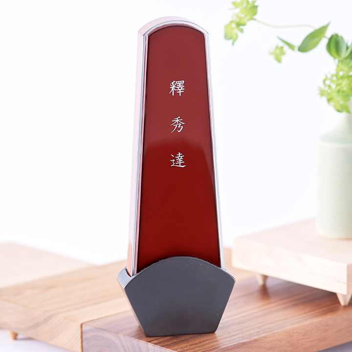
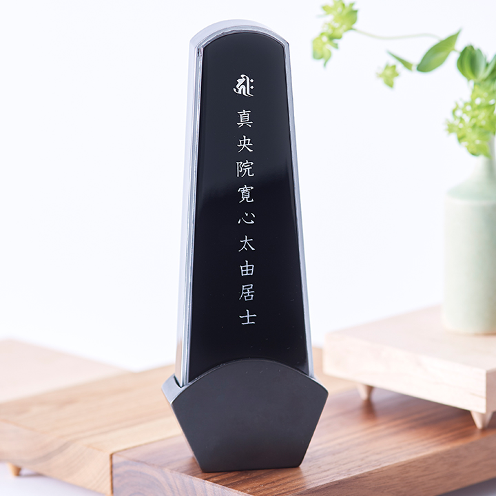
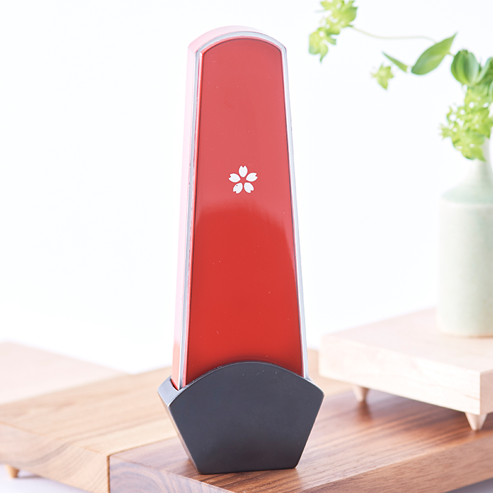
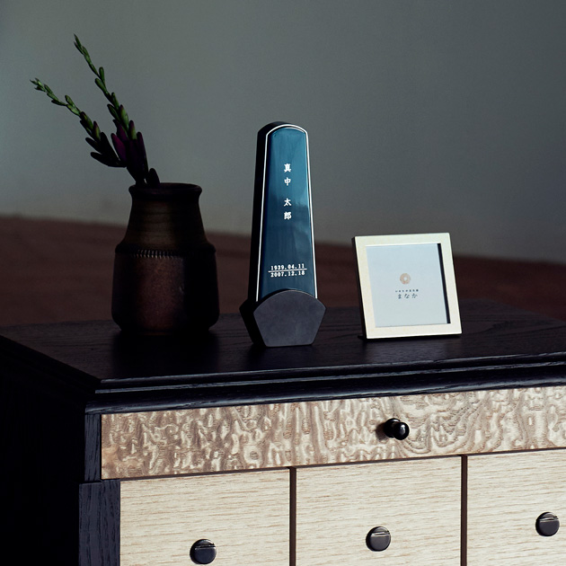
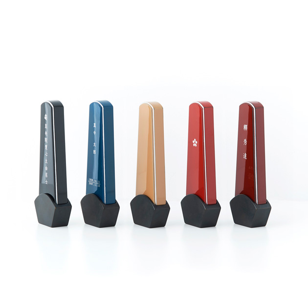
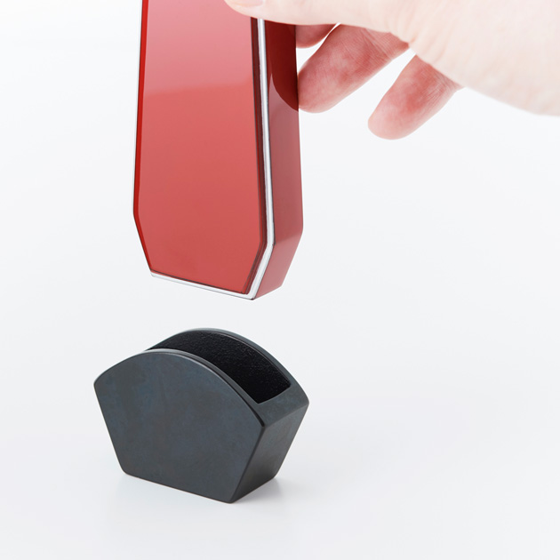
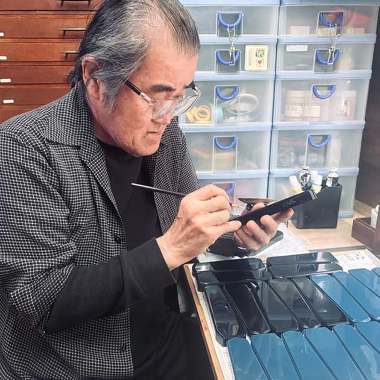
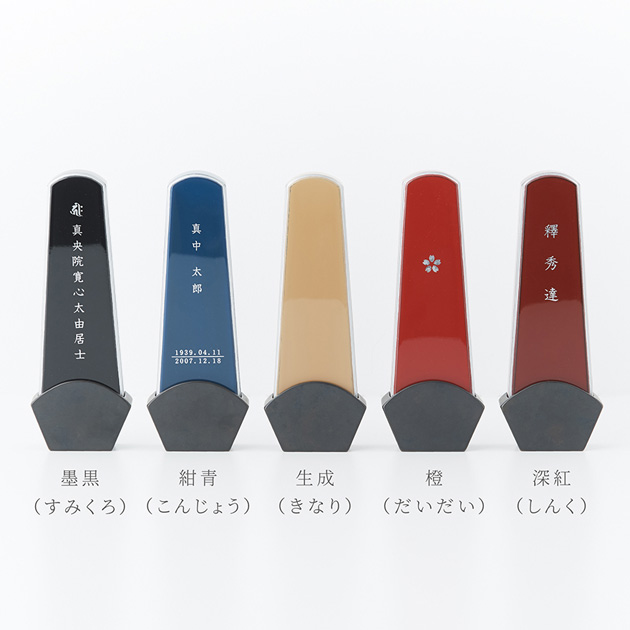

Do
間、個人化への導線
暮らしに間を置く道具を知り、買える場所へ行く。



color: 深紅 / 墨黒 / 紺青 / 生成 / 橙
-
深紅
¥71,500 税込
-
墨黒
¥71,500 税込
-
紺青
¥71,500 税込
-
生成
¥71,500 税込
-
橙
¥71,500 税込
商品説明
新しい伝統的なかたちを目指して
伝統的な黒塗のお位牌を現代の暮らしに寄り添えるようにリデザインされたお位牌です。
元来、お位牌は故人と残された人を繋ぐ尊い存在です。その代表格である伝統的な黒塗のお位牌。華美すぎず、魂を入れる器としてふさわしい気品をまとった黒塗のお位牌の魅力をそのままに、現代の暮らしに寄り添うスタンダードな形を求めました。
凛とした高貴な佇まいに感謝と尊敬の意を込めて、大切な人を想い、手を合わせる。いつの時代にも変わることのないその祈りのある暮らしが続きますように。

親しみやすさと尊さと
古今牌の「札」の形は、親しみやすさと尊さを共存させるべく、少し丸みのあるシンプルで堂々とした形を追求しました。
黒塗のお位牌には、先祖代々から受け継ぎ、家族の個別性を表現した「足」があります。古今牌の「足」は１つです。札を納めたその佇まいに祈りの本質があってこそという思いで、深い黒で重厚感のある真鍮の安定感を大切にしました。

個性豊かな5色の「漆」
伝統的な黒塗のお位牌のオマージュとして、「漆」のお位牌であることは必須でした。
そのために、石川県輪島の漆職人に協力を仰ぎ、古今牌の為だけに墨黒（すみくろ）、紺青（こんじょう）、生成（きなり）、橙（だいだい）、深紅（しんく）の新しい個性豊かな5色の「漆」が誕生しました。本体を際立たせる「差し色」はプラチナ箔に。絶妙な気品とやさしさが寄り添いました。

漆塗の最高峰、呂色を踏襲した伝統の技
古今牌の「漆」は石川県輪島市の漆塗工房の職人により仕上げられています。制作には18もの工程を重ね、摺りがけから磨きまで３回繰り返して仕上げることで漆の美しい艶感を出しています。最後は表面を職人の手で丁寧に研磨。手仕事ゆえに、一つひとつ表情が違う風合いをお楽しみ下さい。「札」を映えさせる重厚感のある「足」は富山県高岡市の職人によって仕上げられています。真鍮製の「足」は型から制作し、アンティークのような風合いを持つ古代色で仕上げました。

輪島で、漆を重ねる人たち
【漆夢工房 清里 水尻 清甫氏】
1850年、石川県輪島市で創業。
「輪島塗史上最良の物づくり」をかかげています。
宮内庁御買上（2019年）、英国国教会の宝物展ランベルパレス御買上（1986年）、エリザベス女王戴冠60周年記念の漆芸王冠寄贈（2012年）など、国内外で認められてきた工房です。
すべてのレストランの味が違うように、輪島塗もまた、工人や工房によって大きく異なります。
だからこそ、100年・200年先に、今以上の評価を得ることを目指して、時間をかけて漆を重ねています。
それが、清里の漆です。

商品仕様
サイズ
全体:高さ16.5cm
本体:幅5cm×奥行1.75cm×高さ14.8cｍ
台:幅6.1cm×奥行2.6cm×高さ4.2cｍ
仕上げ
本体:漆塗り（呂色仕上げ）、プラチナ箔
台:古代色仕上げ
素材
本体:ヒバ、本漆(呂色)
台:真鍮(古代色)
生産地
本体:石川県輪島市
台:富山県高岡市
カラー
墨黒
紺青
生成
橙
深紅
デザイナー
まなか開発チーム